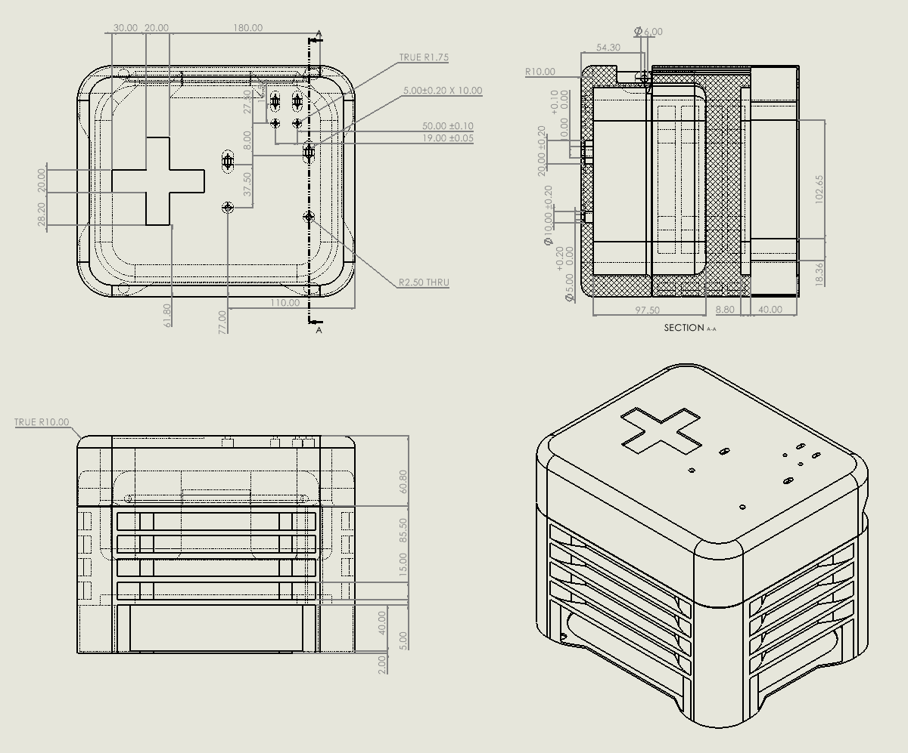
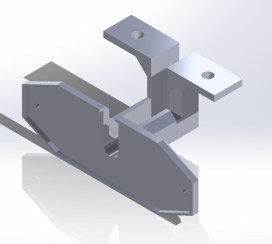
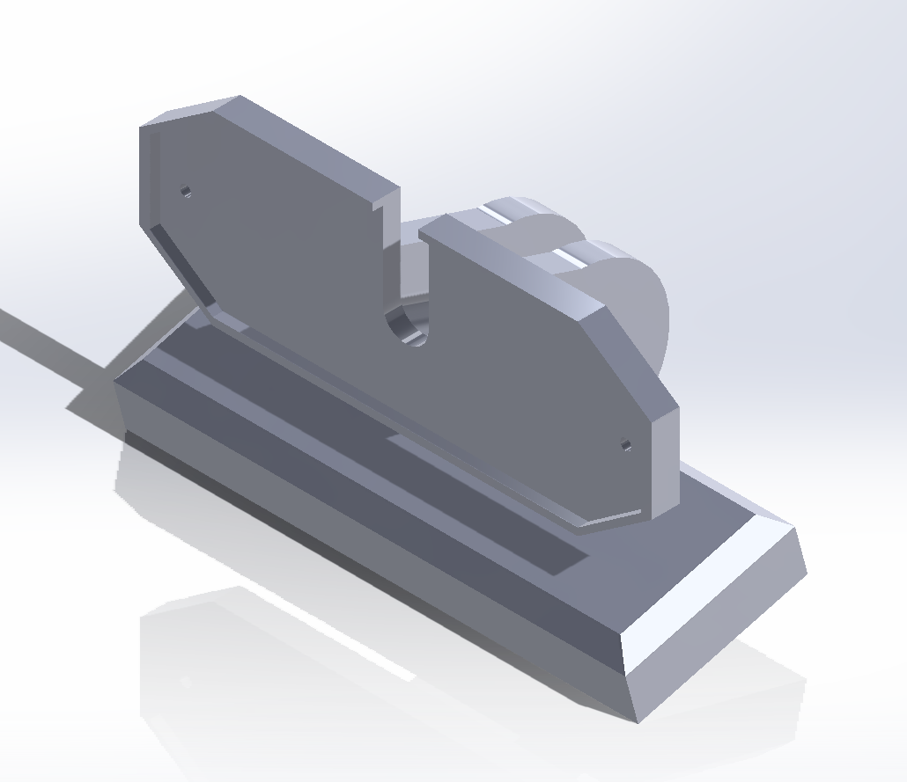

Josh Westlake
Mechatronics and Robotics Engineering Student
Queen's University
Mechatronics and Robotics Engineering Student
Queen's University
Get to Know More About Me
Welcome to my portfolio!
I'm Josh Westlake, a 3rd year Mechatronics and Robotics Engineering Student at Queen's University. As a student, I am driven by a relentless curiosity to explore the boundless possibilities within this field. Through hands-on experiences and academic pursuits, I'm dedicated to shaping the future of robotics technology, particularly in areas where mechanical and control systems converge
This portfolio is designed to showcase a glimpse into my journey, highlighting projects, experiences, and aspirations as I navigate the exciting world of robotics. Whether you're curious about opportunities, or just want to chat about robotics, don't hesitate to reach out!

.png)
The LifeBot project aimed to revolutionize emergency response capabilities, particularly in scenarios such as cardiac arrests, by providing swift access to life-saving equipment in indoor environments where traditional response times may be compromised, specifically in indoor settings where defibrillators are often scattered and difficult-to-locate.
The software development involved several key components, starting with the controller. A PI (Proportional-Integral) controller was implemented to dynamically adjust motor PWM (Pulse Width Modulation) commands, allowing the robot to respond proportionally to differences between desired and actual wheel speeds. The main control loop calculated wheel angular rates from encoder data and adjusted PWM signals to match the vehicle's speed with the target speed. Real-time monitoring was facilitated through the Arduino IDE's serial monitor and plotter, providing insights into wheel velocities. To address discrepancies in wheel speeds due to motor deficiencies, an additional PI system was implemented to minimize errors between the left and right wheel speeds, ensuring accurate trajectory control.
For navigation, the LifeBot utilized ROS2 (Robot Operating System 2) packages. The SLAM (Simultaneous Localization and Mapping) package built a 2D map and determined the robot's position using a laser scanner (RPLIDAR) and an odometry system. The NAV2 package created a cost map, calculated the lowest cost path to the target location, and sent navigation instructions to ROS2 Control. ROS2 Control integrated a differential drive controller, standardizing control and state information and enabling fast data transmission. Communication between the Arduino and Raspberry Pi was managed via ROS2, with internet communications handled by SSH (Secure Shell Protocol) to offload computationally intensive tasks to a base station. Serial communications connected the Arduino to motors, encoders, and sensors, facilitating real-time data exchange and control commands.
The LifeBot project aimed to revolutionize emergency response capabilities, particularly in scenarios such as cardiac arrests, by providing swift access to life-saving equipment in indoor environments where traditional response times may be compromised, specifically in indoor settings where defibrillators are often scattered and difficult-to-locate.Click here to read more
The software development involved several key components, starting with the controller. A PI (Proportional-Integral) controller was implemented to dynamically adjust motor PWM (Pulse Width Modulation) commands, allowing the robot to respond proportionally to differences between desired and actual wheel speeds. The main control loop calculated wheel angular rates from encoder data and adjusted PWM signals to match the vehicle's speed with the target speed. Real-time monitoring was facilitated through the Arduino IDE's serial monitor and plotter, providing insights into wheel velocities. To address discrepancies in wheel speeds due to motor deficiencies, an additional PI system was implemented to minimize errors between the left and right wheel speeds, ensuring accurate trajectory control.
For navigation, the LifeBot utilized ROS2 (Robot Operating System 2) packages. The SLAM (Simultaneous Localization and Mapping) package built a 2D map and determined the robot's position using a laser scanner (RPLIDAR) and an odometry system. The NAV2 package created a cost map, calculated the lowest cost path to the target location, and sent navigation instructions to ROS2 Control. ROS2 Control integrated a differential drive controller, standardizing control and state information and enabling fast data transmission. Communication between the Arduino and Raspberry Pi was managed via ROS2, with internet communications handled by SSH (Secure Shell Protocol) to offload computationally intensive tasks to a base station. Serial communications connected the Arduino to motors, encoders, and sensors, facilitating real-time data exchange and control commands.


The project aimed to design and implement a mounting solution for an Automated External Defibrillator (AED) device, ensuring its secure and accessible placement on a robotic platform for swift delivery during cardiac arrest emergencies.
The proposed solution features a lightweight chassis with a mechanically optimized hinge mechanism. This chassis is mounted on an existing frame using nut and bolt fasteners, allowing for easy installation and removal. PLA plastic was chosen as the material for its cost-effectiveness and structural integrity, while the hinge mechanism ensures easy access to the AED device in emergencies.
The chassis underwent an iterative design process using SolidWorks for Computer-Aided Design (CAD), which was crucial in refining and optimizing the design. Initial sketches and models were created to conceptualize the mounting solution. These preliminary designs were evaluated and modified to address potential issues such as weight distribution, ease of access, and structural integrity. Each iteration involved adjustments to the geometry and material properties to enhance the overall performance and functionality of the chassis.
The chassis underwent rigorous testing through Finite Element Analysis (FEA) to confirm its ability to withstand expected mechanical stresses. SolidWorks built-in simulation tools were employed to conduct various simulations, including stress analysis using Von Mises criteria, displacement analysis, and strain analysis. The results demonstrated the chassis's robustness and reliability: the Von Mises stress ranged from 9.644e+01 to 6.376e+06 N/m², the maximum displacement was 2.530 mm, and the equivalent strain ranged from 3.77e-08 to 2.125e-03. These findings confirmed the chassis’s ability to endure operational mechanical loads while maintaining the AED device securely in place and ready for immediate deployment.
The project aimed to design and implement a mounting solution for LifeBot, ensuring a secure and accessible placement of an AED device on a robotic platform for swift delivery during cardiac arrest emergencies. Click here to read more
The proposed solution features a lightweight chassis with a mechanically optimized hinge mechanism. This chassis is mounted on an existing frame using nut and bolt fasteners, allowing for easy installation and removal. PLA plastic was chosen as the material for its cost-effectiveness and structural integrity, while the hinge mechanism ensures easy access to the AED device in emergencies.
The chassis underwent an iterative design process using SolidWorks for Computer-Aided Design (CAD), which was crucial in refining and optimizing the design. Initial sketches and models were created to conceptualize the mounting solution. These preliminary designs were evaluated and modified to address potential issues such as weight distribution, ease of access, and structural integrity. Each iteration involved adjustments to the geometry and material properties to enhance the overall performance and functionality of the chassis.
The chassis underwent rigorous testing through Finite Element Analysis (FEA) to confirm its ability to withstand expected mechanical stresses. SolidWorks built-in simulation tools were employed to conduct various simulations, including stress analysis using Von Mises criteria, displacement analysis, and strain analysis. The results demonstrated the chassis's robustness and reliability: the Von Mises stress ranged from 9.644e+01 to 6.376e+06 N/m², the maximum displacement was 2.530 mm, and the equivalent strain ranged from 3.77e-08 to 2.125e-03. These findings confirmed the chassis’s ability to endure operational mechanical loads while maintaining the AED device securely in place and ready for immediate deployment.


The purpose of the project was to engineer a robotic arm attachment for wheelchairs, specifically designed to empower individuals with limited grip strength in manipulating objects with ease and precision. This solution aims to enhance autonomy and quality of life by enabling users to perform daily tasks, such as handling mobile phones, independently.
The project required meticulous selection and integration of various components into the arm's design, including craft sticks for structural support, wire connectors for electrical connections, and an Arduino Uno as the central control unit. These components were strategically chosen to ensure optimal performance and reliability, meeting the specific requirements of the arm's functionality.
Integral to the arm's operation is the gearbox mechanism, comprising gears, rods, and motors. The gearbox transmits rotational motion and torque from the DC motors to facilitate smooth and efficient movement of the arm's gripper mechanism. Additionally, the incorporation of a stepper motor enables precise control and manipulation of objects, enhancing the arm's functionality and usability. Through iterative design iterations and rigorous testing, the project successfully developed a practical and efficient solution. CAD software was utilized to refine and optimize the arm's geometry, ensuring structural integrity and mechanical robustness. Furthermore, simulation techniques, such as stress analysis and displacement analysis, were employed to validate the arm's performance under operational loads, confirming its reliability and effectiveness in assisting individuals with grip strength limitations.
The Arduino Uno was chosen to interface with sensors, motors, and other electronic components, enabling seamless communication and coordination within the robotic arm system. Its ability to process input signals and execute predefined instructions allows for intuitive user control, enhancing the arm's usability and accessibility.
The purpose of the project was to engineer a robotic arm attachment for wheelchairs, specifically designed to empower individuals with limited grip strength in manipulating objects with ease and precision. This solution aims to enhance autonomy and quality of life by enabling users to perform daily tasks, such as handling mobile phones, independently.Click here to read more
The project required meticulous selection and integration of various components into the arm's design, including craft sticks for structural support, wire connectors for electrical connections, and an Arduino Uno as the central control unit. These components were strategically chosen to ensure optimal performance and reliability, meeting the specific requirements of the arm's functionality.
Integral to the arm's operation is the gearbox mechanism, comprising gears, rods, and motors. The gearbox transmits rotational motion and torque from the DC motors to facilitate smooth and efficient movement of the arm's gripper mechanism. Additionally, the incorporation of a stepper motor enables precise control and manipulation of objects, enhancing the arm's functionality and usability. Through iterative design iterations and rigorous testing, the project successfully developed a practical and efficient solution. CAD software was utilized to refine and optimize the arm's geometry, ensuring structural integrity and mechanical robustness. Furthermore, simulation techniques, such as stress analysis and displacement analysis, were employed to validate the arm's performance under operational loads, confirming its reliability and effectiveness in assisting individuals with grip strength limitations.
The Arduino Uno was chosen to interface with sensors, motors, and other electronic components, enabling seamless communication and coordination within the robotic arm system. Its ability to process input signals and execute predefined instructions allows for intuitive user control, enhancing the arm's usability and accessibility.
While individual subsystems showed success, the overall prototype failed to meet project requirements. This was due to the inconsistent gearbox performance, slow gripper motion, and structural limitations of the popsicle stick truss.
Future iterations of the robot have commenced with a focus on strengthening connections, optimizing motor speed, and reducing friction in the gripper system for increased efficiency and functionality.


The Queens Racing Team's goal was to design a lighter, detachable rear subframe for their Formula SAE car to enhance acceleration and control. This new subframe needed to reduce weight while still providing necessary mounting points for the powertrain, rear suspension, and rear wing.Click here to read more
The final design developed for the detachable subframe for the Queens Racing Team's open-wheel car consists of a trapezoidal prism with two slanted sides and no cross-bracing. This design choice focused on reducing material usage and overall weight while maintaining structural integrity. The subframe is constructed entirely from 4130 steel tubing, chosen for its lightweight yet durable properties. The wide top and narrow base of the trapezoidal shape distribute forces evenly, reducing stress on any single point. The absence of cross-bracing simplifies the design and reduces weight further, making the subframe easier to manufacture while still providing sufficient support for the car’s components.
To ensure durability and performance, the subframe’s mounting points for the rear suspension, powertrain, and rear wing are carefully positioned. The mounting points for the rear suspension are retained in their original locations to ensure compatibility and ease of integration. The connection points to the car’s main frame utilize removable frame bungs, inspired by a design from California Polytechnic State University, which allow for easy detachment and reattachment, facilitating maintenance and repairs.
The final design achieved a significant weight reduction, bringing the subframe's weight down from 29.6 kg to 7.7 kg, thus enhancing the vehicle's acceleration and control. The use of 4130 steel tubing provided the necessary strength to withstand the forces encountered during racing. The simplified design, free from cross-bracing, was not only lighter but also easier and more cost-effective to manufacture. Finite Element Analysis (FEA) simulations confirmed that the subframe could handle the required forces, ensuring it met all safety and performance criteria. The detachable subframe design successfully balanced weight reduction, durability, and manufacturability, aligning with the project's goals and constraints.
The Queens Racing Team's goal was to design a lighter, detachable rear subframe for their Formula SAE car to enhance acceleration and control. This new subframe needed to reduce weight while still providing necessary mounting points for the powertrain, rear suspension, and rear wing.
The final design developed for the detachable subframe for the Queens Racing Team's open-wheel car consists of a trapezoidal prism with two slanted sides and no cross-bracing. This design choice focused on reducing material usage and overall weight while maintaining structural integrity. The subframe is constructed entirely from 4130 steel tubing, chosen for its lightweight yet durable properties. The wide top and narrow base of the trapezoidal shape distribute forces evenly, reducing stress on any single point. The absence of cross-bracing simplifies the design and reduces weight further, making the subframe easier to manufacture while still providing sufficient support for the car’s components.
To ensure durability and performance, the subframe’s mounting points for the rear suspension, powertrain, and rear wing are carefully positioned. The mounting points for the rear suspension are retained in their original locations to ensure compatibility and ease of integration. The connection points to the car’s main frame utilize removable frame bungs, inspired by a design from California Polytechnic State University, which allow for easy detachment and reattachment, facilitating maintenance and repairs.
The final design achieved a significant weight reduction, bringing the subframe's weight down from 29.6 kg to 7.7 kg, thus enhancing the vehicle's acceleration and control. The use of 4130 steel tubing provided the necessary strength to withstand the forces encountered during racing. The simplified design, free from cross-bracing, was not only lighter but also easier and more cost-effective to manufacture. Finite Element Analysis (FEA) simulations confirmed that the subframe could handle the required forces, ensuring it met all safety and performance criteria. The detachable subframe design successfully balanced weight reduction, durability, and manufacturability, aligning with the project's goals and constraints.

A fully autonomous mobile robot designed to replicate the functionalities of self-driving digging trucks which are used in modern day mining operations. The primary goal of this project was to demonstrate the viability of autonomous technology in enhancing efficiency and safety within mining environments.Click here to read more
To accomplish this, a line-following navigation algorithm utilizing a PID controller for precise line-following capabilities was developed. By implementing the Ziegler-Nichols method for tuning the PID controller, the robot was able to navigate predefined paths with high accuracy. An open-loop control was also implemented to handle intersections of the line, ensuring that the robot could continue its path seamlessly even at complex junctures.
The hardware setup played a crucial role in the robot's functionality. The configuration included an ItsyBitsy microcontroller, LED indicators, buttons, reflective object sensors, DC motors, an infrared distance sensor, and servo motors. This hardware facilitated autonomous navigation and task execution by providing real-time sensor data to the control algorithms. The integration of these components allowed MiniBot to perform its tasks efficiently, demonstrating the importance of a well-coordinated hardware-software system in achieving autonomous operation.
The final prototype was able to achieve an 80% success rate in item collection and transportation, effectively simulating the functions of autonomous digging trucks in mining applications.
A fully autonomous mobile robot designed to replicate the functionalities of self-driving digging trucks which are used in modern day mining operations. The primary goal of this project was to demonstrate the viability of autonomous technology in enhancing efficiency and safety within mining environments.
To accomplish this, a line-following navigation algorithm utilizing a PID controller for precise line-following capabilities was developed. By implementing the Ziegler-Nichols method for tuning the PID controller, the robot was able to navigate predefined paths with high accuracy. An open-loop control was also implemented to handle intersections of the line, ensuring that the robot could continue its path seamlessly even at complex junctures.
The hardware setup played a crucial role in the robot's functionality. The configuration included an ItsyBitsy microcontroller, LED indicators, buttons, reflective object sensors, DC motors, an infrared distance sensor, and servo motors. This hardware facilitated autonomous navigation and task execution by providing real-time sensor data to the control algorithms. The integration of these components allowed MiniBot to perform its tasks efficiently, demonstrating the importance of a well-coordinated hardware-software system in achieving autonomous operation.
The final prototype was able to achieve an 80% success rate in item collection and transportation, effectively simulating the functions of autonomous digging trucks in mining applications.
TEXT.
TEXT
Manipulation of complex Control Systems, including precise PID controllers and implemented real-time monitoring via Arduino IDE for accurate motor control and swift adjustments, enhancing maneuverability and response effectiveness.
The Autonomous Navigation leveraged ROS2 navigation packages and sophisticated SLAM mapping algorithms, enabling the LifeBot to autonomously navigate indoor environments, swiftly reaching predetermined destinations for timely assistance.
TEXT


Queen's University